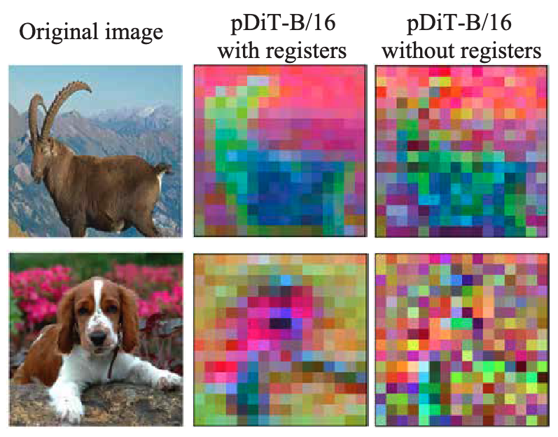

Registers Matter for Pixel-Space Diffusion Transformers
arXiv 2026
We show that registers can improve DiTs, especially in pixel-space models, and help explain some of their strong performance.
- Pixel-space models benefit the most from registers, while latent-space models show smaller gains or slight drops.
- Registers reduce patch-token feature norms and make intermediate feature maps smoother, especially at high noise levels.
- Recent pixel-space DiTs already seem to use register-like behavior implicitly.